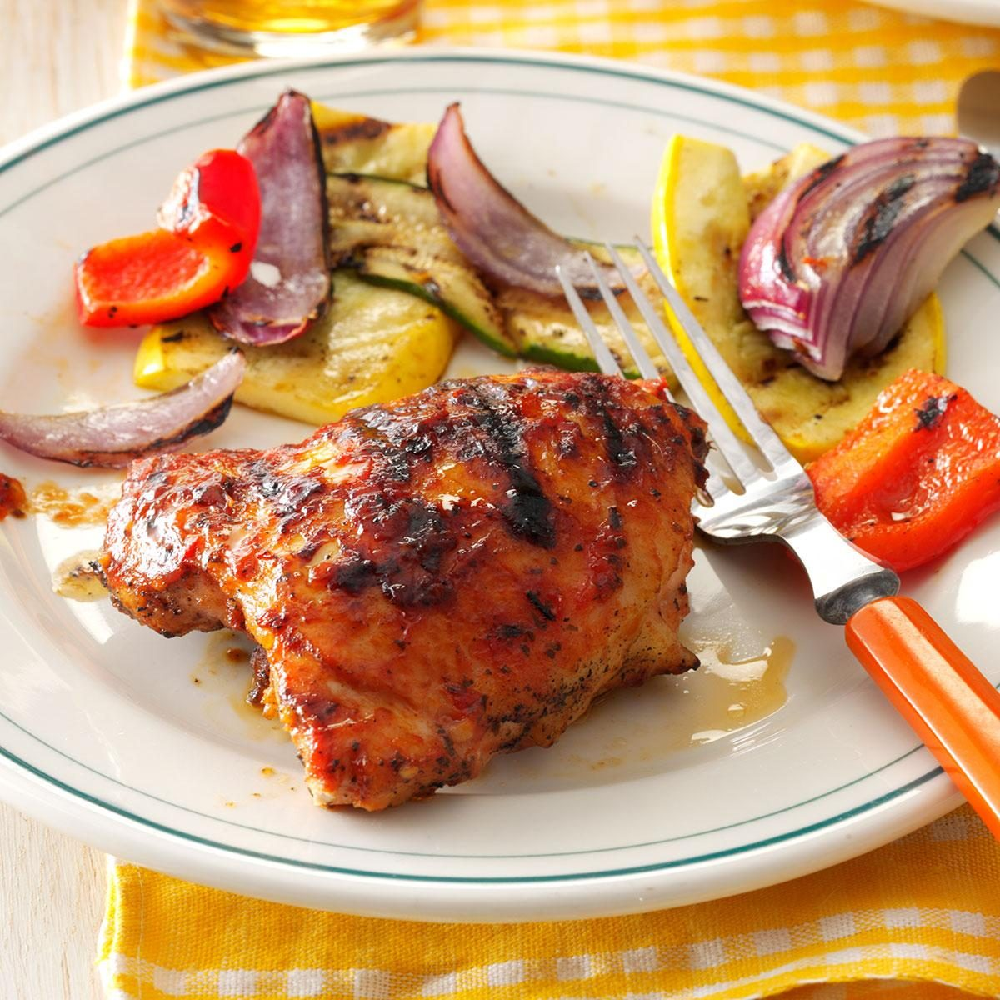
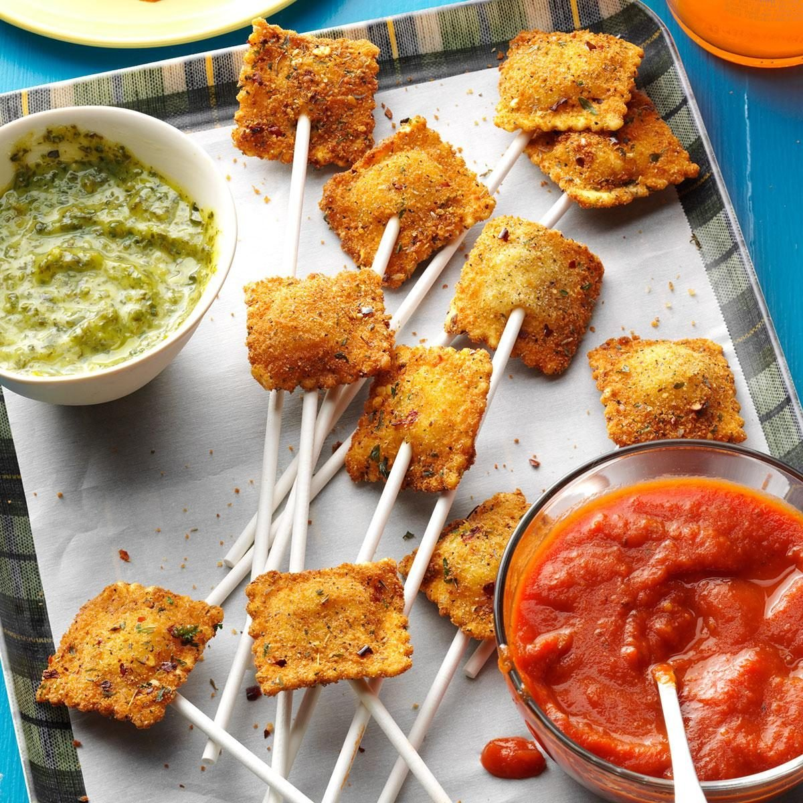

SERIOUSLY FIERCE CHICKEN
⏰ 35 min | 👬 8 | 🔥🔥
INGREDIENTS
- 1 bottle DRACARYS HABANERA sauce
- 1/3 cup white wine or chicken broth
- 1/4 cup olive oil
- 10 to 12 garlic cloves, minced
- 4-1/2 tsps dried basil
- 1/2 tsps salt
- 1/8 tsps pepper
- 8 bone-in chicken thighs (about 3 pounds)
METHOD
- In a large bowl, whisk the first seven ingredients until blended.
- Pour 1-1/2 cups marinade into a large resealable plastic bag. Add chicken.
- Seal bag and turn to coat. Let it rest for a moment.
- Drain chicken, discarding marinade in bag. Place chicken on a greased grill rack,
skin side down.
- Grill, covered, over medium heat for 15 minutes. Turn. Grill 10-15 minutes longer or
until a thermometer reads 170°-175°, basting occasionally with reserved marinade.
- Serve with seasoned greens and roasted vegs.
---

HOT RAVIOLI POPS
⏰ 35 min | 👬 42 | 🔥🔥
INGREDIENTS
- 1/4 cup ORIGINAL SCORPIO STING sauce
- 1/2 cup dry bread crumbs
- 1-1/2 tsps dried oregano
- 1 tsp salt
- 1/3 cup flour
- 2 large eggs, beaten
- 1 package (9 ounces) cheese ravioli
- Oil for frying
- Grated Parmesan cheese
- 42 lollipop sticks
- Warm marinara sauce
METHOD
- In a shallow bowl, mix bread crumbs and seasonings.
- Place flour and eggs in separate Bowls.
- Dip ravioli in flour to coat both sides. Shake off excess.
- Dip in egg, then in crumb mixture, patting to help coating adhere.
- In a large electric or cast-iron skillet, heat 1/2 in. of oil to 375°. Fry ravioli, a few at a time, until golden brown, 1-2 minutes on each side.
- Drain on paper towels. Immediately sprinkle with cheese if desired.
- Carefully insert a lollipop stick into the back of each ravioli.
- Serve warm and dip in marinara sauce spiked with ORIGINAL SCORPIO STING.
---

SPICY PIZZETE CUPS
⏰ 45 min | 👬 35 | 🔥🔥🔥
INGREDIENTS
- 1/3 cup HOT BONNET DRACARYS sauce
- 1 roll shortcrust pastry
- 8 ounces pizza sauce
- 1/4 cup finely chopped onion
- 1/3 cup finely chopped green pepper
- 2 ounces sliced turkey pepperoni, chopped
- 1 cup Buffala mozzarella cheese
METHOD
- Preheat oven to 375°. Separate shortcrust pastry into 8 rolls each; halve the rolls.
- Press dough onto the bottom and up the sides of miniature muffin cups coated with cooking spray.
- Mix pizza sauce with HOT BONNET DRACARYS sauce
- Spoon pizza-sauce mix into each cup.
- Sprinkle with onion, green pepper, pepperoni and cheese.
- Bake until the crusts are browned and cheese is melted, 15-18 minutes.
---

FIERY FAJITA SNACK
⏰ 30 min | 👬 4 | 🔥🔥
INGREDIENTS
- 1/4 cup DRACARYS SALSITA VERDE sauce
- 1 pound lean ground beef (90% lean)
- 2 tbsps fajita mix
- 2 tsps canola oil
- 2 medium peppers, cut into strips
- 1 medium onion, halved and sliced
- 4 flour tortillas (10 inches)
- 3/4 cup shredded cheddar
METHOD
- In a large bowl, combine beef, seasoning mix and DRACARYS SALSITA VERDE, mixing lightly but thoroughly. Shape into four 1/2-in.-thick patties.
- In a large skillet, heat oil over medium heat. Add burgers. Cook 4 minutes on each side. Remove from pan.
- Add peppers and onion. Cook and stir 5-7 minutes or until lightly browned and tender.
- On the center of each tortilla, place 1/2 cup pepper mixture, 1 burger and 3 tbsps cheese.
- Fold sides of tortilla over burger. Fold top and bottom to close, forming a square.
- Wipe skillet clean. Place wraps in skillet, seam side down. Cook on medium heat 1-2 minutes on each side or until golden brown and a thermometer inserted in beef reads 160°.
---

SPEARED FRUIT
⏰ 25 min | 👬 8 | 🔥
INGREDIENTS
- 1/2 cup DRACARYS PEQUEÑO PIQUILLO sauce
- 1/2 cup apricot preserves
- 1 tbsps butter
- 1/8 tsps ground cinnamon
- 1/8 tsps ground nutmeg
- 9 medium pieces of fruit (nectarines, peaches, plums)
- 1 loaf (10-3/4 ounces) frozen pound cake, thawed and cut into 1.1/2-inch cubes
METHOD
- In a small saucepan, combine first five ingredients. Cook and stir over medium heat until blended.
Remove from heat.
- On eight metal or soaked wooden skewers, alternately thread fruit and pound cake.
- Place on a greased rack over medium heat.
- Grill, uncovered, until lightly browned and fruit is tender, brushing occasionally with apricot mixture.
- Excellent dipped in chocolate sauce, or served alongside vanilla gelato or sharp berry sorbet.